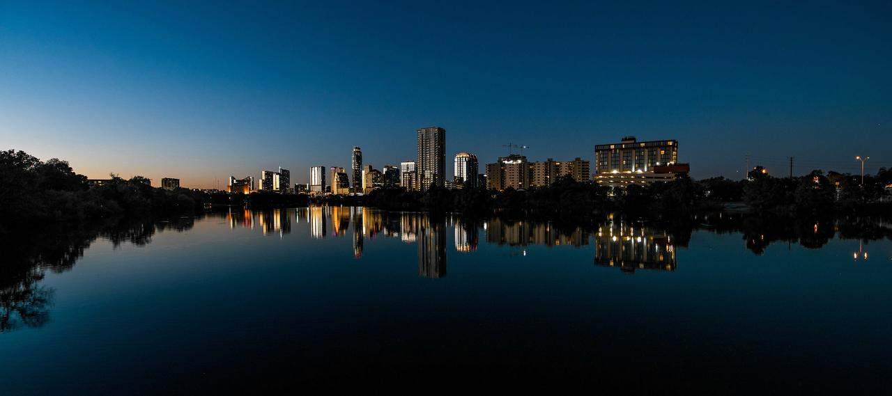

Dynamis Blake Designs
Blake Dylan
Musician, contractor, and dad.
Founder of Dynamis Blake Designs (DBD).

Spiritual Solidarity, Support, and Service for all of God's children.
We need grace. We offer grace.
God is good.
Good times, bad times, you know I've had my share.
Arguing with a license.
The work
Farthing Grace Services
Farthing Grace Services: handyman, yard work, landscaping and pressure washing in South and Central Texas. Faith first and family owned.
The music
Blake Dylan, live acoustic
Guitar, harmonica, folk and country, with faith at the center.
More
- Faith The center of it all
- Education Teach. Learn. Pass it on.
- Coding Games, apps and the sports universe
- Apps Things I've built
- Read My Memoir The Pilgrim Chronicle
- The Full Story Go deeper, Level 3
- Family Archive Scrolls kept for the ones who come after
- Seedy Almalexia District My Morrowind mod, built at 16
- The Council Casa O'Faydin
- More & Contact Dynamis Blake Designs (DBD)
Contact
- Call
- (979) 578-2069
- Text
- 979-578-2069
- blake@dynamisblake.com
Follow
- YouTube
- @fteam777
- TikTok
- @dynamisblakefgstx
- @blakewhy
- Blake Texas Music Farthing Grace Services The Pilgrims Chronicle - AI & Humanity Ferrum Ferro Global DBD
- Tip
- Cash App $blakers1776